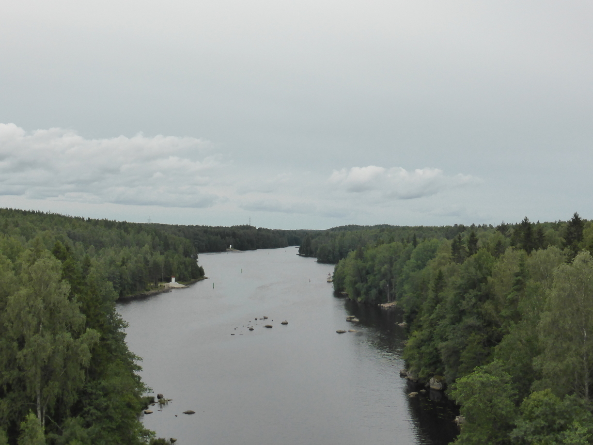
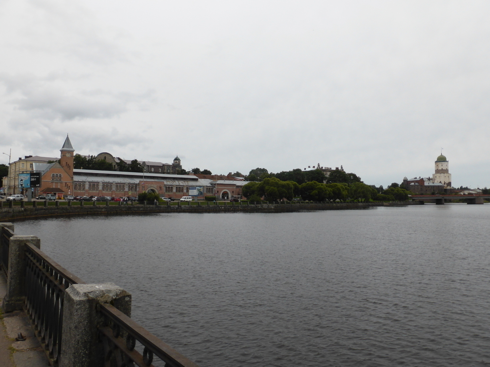

SNAFU Posted on August 1, 2016
Tag 66
Lappeenranta - Viipuri / Vyborg (Russland) 76 km
Von Lappenranta waren es nur ungefähr 20 Kilometer bis zur Grenze. Doch zuerst fuhr ich noch zu einem Supermark um mich noch einmal an all den finnischen Köstlichkeiten (Hauptsächlich Lakritz) zu erfreuen.
Beim Grenzübertritt brauchte ich ein wenig Geduld. Auf der finnischen Seite ging es noch recht flott und das Personal war zwar unfreundlich und genervt aber man sprach wenigsten Englisch. Nach einer Fahrt durch ungefähr 3 Kilometer Niemandsland kam ich dann an der russischen Grenzkontrolle an. Hier gab es zwei Schlangen. Eine für Russen und eine für EU-Bürger. Die EU-Schlange war natürlich um einiges länger und bewegte sich nicht merklich. Nachdem ich dann endlich am Schalter ankam musste ich noch ein absolut überflüssiges Formular ausfüllen, in dem nur Sachen abgefragt wurden, die auch im Visum oder im Reisepass standen. Und das ganze natürlich in zweifacher Ausführung. Am Ende durfte ich dann doch passieren.
Die Strecke bis Vyborg führte meistens an einem Kanal entlang. An Landschaft gab es, wie auch in Finnland, Wälder und Seen. 
In Vyborg hab ich schnell die Burg gefunden, und anschließend das Hostel. Leider sprach man an der Rezeption kein Englisch, was die Kommunikation schwierig aber nicht unmöglich machte. 
Am Abend bin ich noch ein bisschen durch die Stadt gelaufen. Leider war es die ganze Zeit am regnen, so dass ich frühzeitig zum Hostel zurück bin.